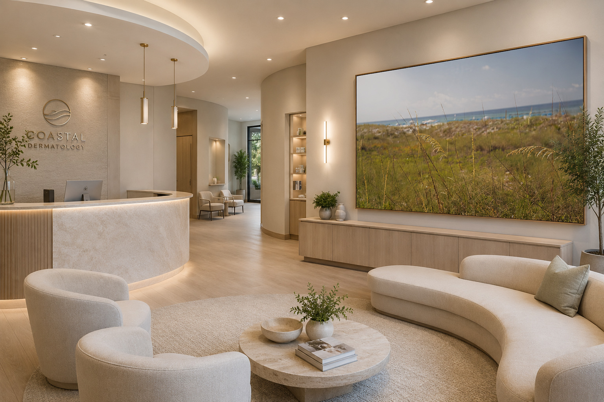
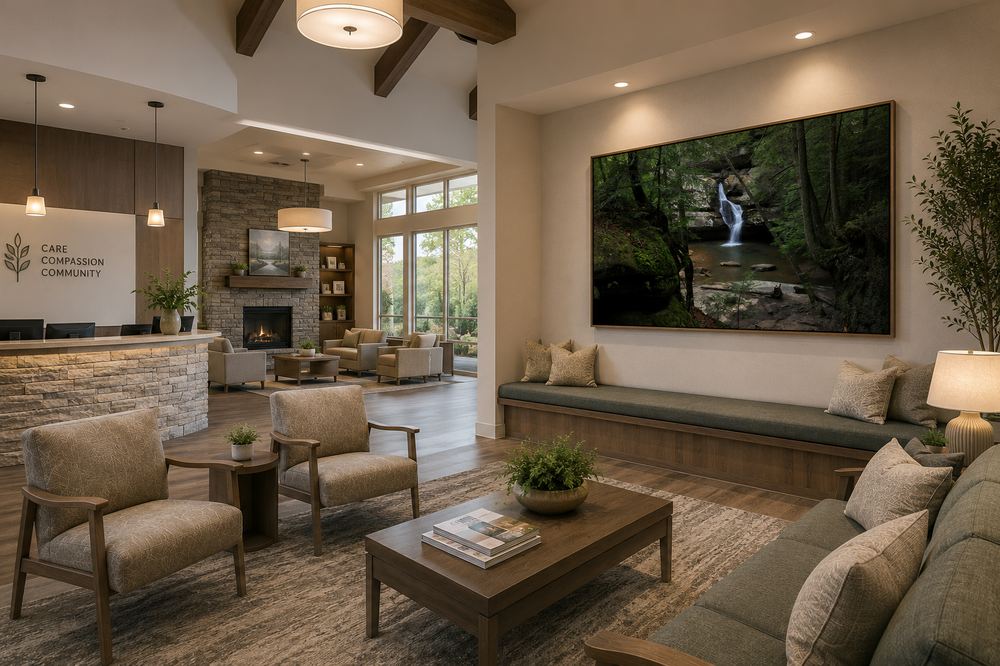
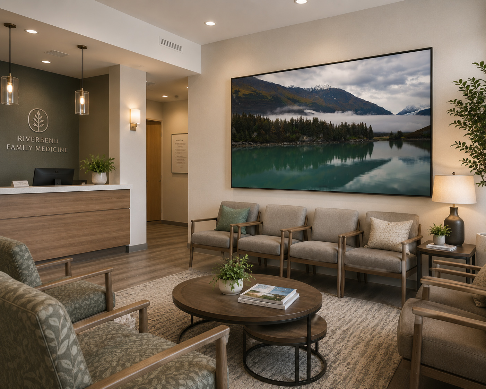
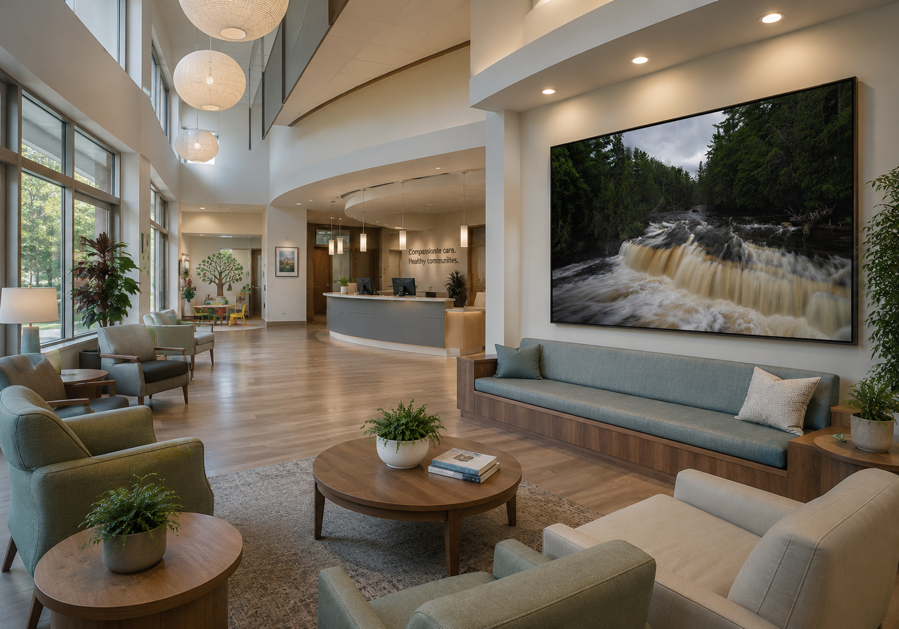
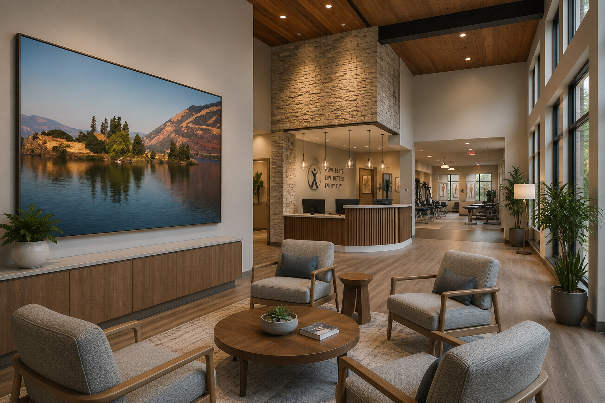
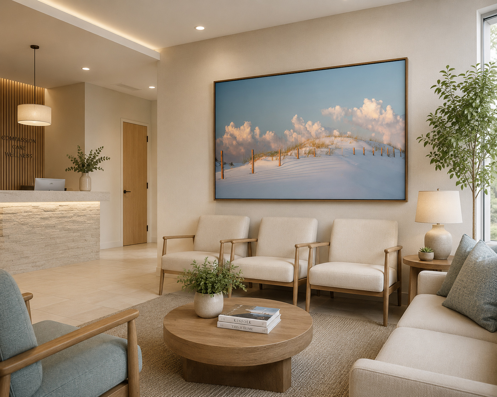
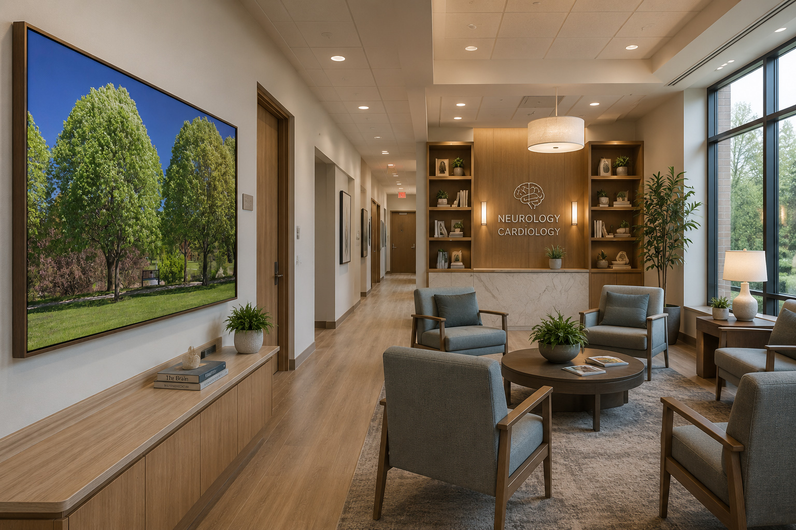
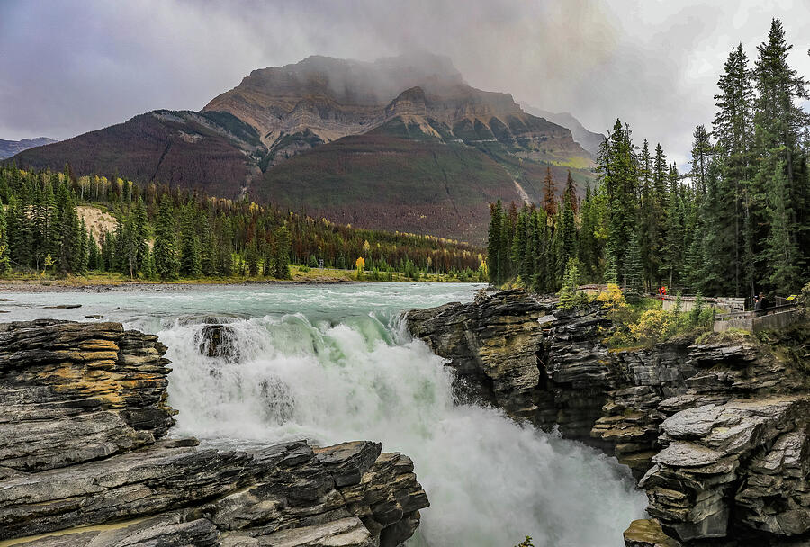
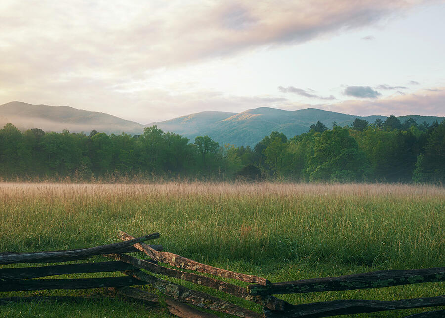
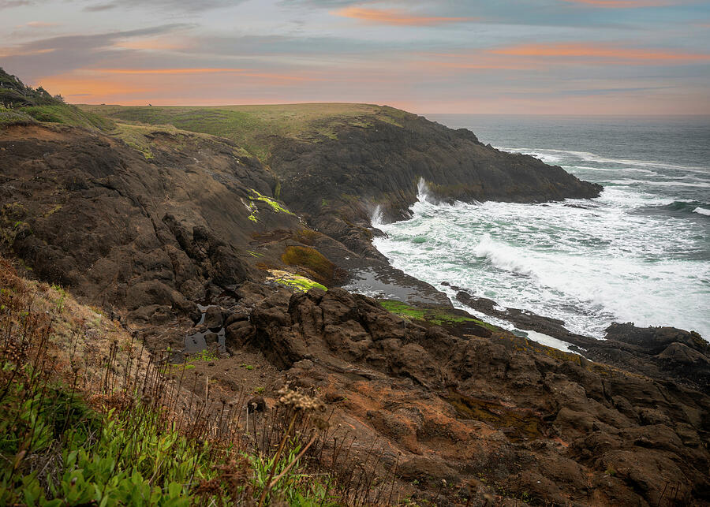

Family Medicine · Soft Mountain Atmosphere
Foggy Morning Landscape Cades Cove
A calm mountain fog landscape for family medicine, primary care, wellness clinics, and patient-facing reception spaces.
Waiting Room Artwork
Nature photography for waiting rooms, family practices, dental offices, therapy spaces, wellness clinics, and healthcare reception areas that need to feel calmer, warmer, and more welcoming.
Featured Waiting Room Preview
Foggy Morning Landscape Cades Cove — soft mountain atmosphere for a family medicine waiting room, wellness clinic, or patient-facing reception area.
Patient-Facing Spaces
The waiting room is often the first place patients experience a practice. Calm nature imagery can help soften the room, reduce visual harshness, and create a more reassuring impression before the appointment begins.
Healthcare interiors often use nature connection and positive visual distraction to support comfort and reduce the institutional feel of clinical spaces. For waiting rooms, the safest approach is low-distraction imagery: water, soft forests, quiet horizons, and natural scenes that feel calm rather than dramatic.
This page is designed for smaller practices and patient-facing spaces that need practical artwork guidance without a full commercial art consultation. Start with the room type, compare the mockups, then request a simple recommendation if you want help choosing size, format, or image direction.
Room Mockups
Click any room preview to enlarge it and view artwork recommendations, suggested sizes, formats, and framing direction.
Family Medicine · Soft Mountain Atmosphere
A calm mountain fog landscape for family medicine, primary care, wellness clinics, and patient-facing reception spaces.

Dermatology · Dental · Coastal Calm
Soft coastal grasses and distant water for bright dermatology, dental, med spa, and wellness reception areas.

Ohio Clinic · Local Nature · Forest Waterfall
A regional Ohio waterfall scene for Ohio medical offices, therapy spaces, and local healthcare environments.

Family Medicine · Lake Reflection · Quiet Scale
A reflective Alaska lake and mountain scene for waiting rooms that need depth, calm color, and a refined statement.

Large Waiting Room · Flowing Water
Flowing water imagery for larger patient lounges, wellness centers, and healthcare reception spaces.

Physical Therapy · Wellness · Water View
A calm river and mountain view for physical therapy, chiropractic, wellness, and active-care waiting areas.

Wellness · Therapy · Soft Coastal
A bright, quiet coastal dune scene for therapy waiting areas, wellness clinics, and softer patient-facing rooms.

Specialty Office · Green Nature · Local Calm
A green park scene for specialty medical offices, corridors, and smaller waiting rooms where a familiar outdoor view feels welcoming.
Choose by Space
Different practices need different moods. A dental office may benefit from brighter coastal work, while a counseling office may call for softer water or forest imagery.
Use quiet landscapes, water, and soft mountain scenes that feel professional, reassuring, and easy to sit with.
Clean coastal imagery, soft blue-green palettes, and bright nature scenes work especially well in polished reception areas.
Choose muted water, fog, forests, and gentle horizons rather than dramatic or high-contrast imagery.
Use restorative water, open landscapes, and outdoor scenes that support movement, recovery, and a less clinical atmosphere.
Selected Print Starting Points
Additional print starting points for waiting rooms, therapy offices, dental reception areas, and wellness clinics. Each image opens directly to print and purchase options.

Waterfall · Canadian Rockies · Restorative
A powerful but balanced waterfall scene with mountain atmosphere, cool water, and natural texture for patient-facing spaces that need a refined restorative focal point.
Shop Print
Fog · Meadow · Soft Horizon
A gentle meadow and mountain scene with soft morning fog. This is a strong choice for family medicine, counseling offices, and quieter wellness spaces.
Shop Print
Coastal · Shoreline · Evening Calm
A coastal landscape with soft evening color, open water, and rocky shoreline detail. Useful for reception spaces that need calm energy and a sense of distance.
Shop PrintLighthouse · Coastal · Warm Light
A warm coastal lighthouse scene with familiar architecture and open sky. This works especially well for patient areas that need a welcoming, hopeful focal point.
Shop PrintFree Waiting Room Mockup Help
Send a photo of your waiting room, reception area, therapy office, or clinic lobby and Dan can suggest artwork direction, size, format, and framing style before you order.
Waiting Room Artwork FAQ
Good calming nature prints for healthcare and therapy offices include quiet water scenes, soft forest paths, misty landscapes, gentle mountains, muted coastal imagery, and low-distraction nature photography. For waiting rooms and therapy spaces, the best artwork usually feels reassuring, warm, and easy to live with rather than dramatic, busy, or overstimulating. Start with Wellness Waters, Quiet Earth, or the broader Healthcare Artwork guide.
Calm nature imagery usually works best: soft water, forests, quiet mountains, coastal grasses, muted horizons, and local nature scenes. The goal is to make the room feel more welcoming without adding visual clutter.
No. These ideas also work for dental offices, therapy practices, counseling offices, wellness clinics, chiropractic offices, physical therapy clinics, dermatology offices, and patient-facing business spaces.
For a row of chairs or a sofa wall, start around 30×40, 36×48, 40×60, or larger depending on the wall width. A large horizontal piece often works better than several small prints.
Yes. Send a room photo and Dan can suggest artwork direction, size, format, and framing style, or create a simple mockup to help you visualize the artwork in the space.